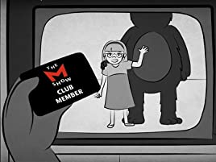
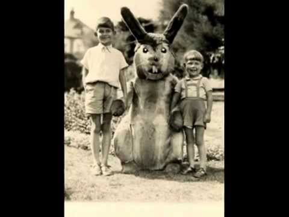

ದಿ M Show Fan ಕ್ಲಬ್
ನಾನು 9 ವರ್ಷದವಳಿದ್ದಾಗ ನನಗೆ ನೆಚ್ಚಿನ ಟಿವಿ ಸರಣಿ ಇತ್ತು. ಇದು ಪ್ರಾಣಿಗಳ ಸೂಟ್ಗಳಲ್ಲಿ ಮಾನವ ನಟರು ಮತ್ತು ನಟರನ್ನು ಹೊಂದಿತ್ತು ಮತ್ತು ನಡುವೆ ತಮಾಷೆ ಮತ್ತು ಶೈಕ್ಷಣಿಕ ತುಣುಕುಗಳನ್ನು
ಹೊಂದಿತ್ತು. ನಾನು ಅದನ್ನು ಹೆಸರಿಸಲು ಬಯಸುವುದಿಲ್ಲ ಏಕೆಂದರೆ ಇದು ನಿಜವಾಗಿಯೂ ಉತ್ತಮ ಪ್ರದರ್ಶನವಾಗಿದೆ ಮತ್ತು ಈ ಕಥೆಯು ಪ್ರದರ್ಶನದ ದೋಷವಲ್ಲ. ನಾನು ಅದನ್ನು "ದಿ ಎಂ ಶೋ" ಎಂದು ಕರೆಯುತ್ತೇನೆ.
ಎಂ ಶೋ ವರ್ಷಗಳಿಂದ ಚಾಲನೆಯಲ್ಲಿದೆ ಮತ್ತು ನಾನು ನೆನಪಿಡುವಷ್ಟು ಕಾಲ ಅದನ್ನು ನೋಡುತ್ತಿದ್ದೆ.
ನಾನು ಯಾವಾಗಲೂ ನನ್ನ ಅಕ್ಕ ಸ್ಕಾರ್ಲೆಟ್ ಮತ್ತು ಪಕ್ಕದಲ್ಲಿ ವಾಸಿಸುತ್ತಿದ್ದ ನನ್ನ ಅತ್ಯುತ್ತಮಸ್ನೇಹಿತ
"ಬ್ರಾಂಡಿ" ಅವರೊಂದಿಗೆ ಶಾಲೆಯ ನಂತರ ನೇರವಾಗಿ ಕುಳಿತುಕೊಂಡೆ.
ಇದು ನಮ್ಮ ಆಚರಣೆಯಾಗಿತ್ತು, ಪ್ರತಿದಿನ ನಾವು ಮೂವರು ಒಟ್ಟಿಗೆ ಕುಳಿತುಕೊಳ್ಳುತ್ತೇವೆ - ಸಿಹಿತಿಂಡಿಗಳೊಂದಿಗೆ, ನಮ್ಮ ಅಮ್ಮಂದಿರು ಅದನ್ನು ಅನುಮತಿಸಿದರೆ, ಇಲ್ಲದಿದ್ದರೆ ಸೇಬು ಅಥವಾ ದ್ರಾಕ್ಷಿಯೊಂದಿಗೆ - ಮತ್ತು ಪ್ರದರ್ಶನದ ವಿರಾಮಗಳಲ್ಲಿ ನಾವು ನಮ್ಮ ಜೀವನದಲ್ಲಿ ಆ ಎಲ್ಲ ಪ್ರಮುಖ ವಿಷಯಗಳ ಬಗ್ಗೆ ಮಾತನಾಡುತ್ತೇವೆ ಮತ್ತು ಗಾಸಿಪ್ ಮಾಡುತ್ತಿದ್ದೇವೆ.
ನಂತರ, ಇದು ಶುಕ್ರವಾರ ಬೆಚ್ಚಗಿನ ಬೇಸಿಗೆ ಎಂದು ನನಗೆ ನೆನಪಿದೆ, ಸ್ಕಾರ್ಲೆಟ್ ತನ್ನ ಹುಡುಗಿಯ ನಿಯತಕಾಲಿಕೆಗಳಲ್ಲಿ ಬಹುಮಾನ ಸ್ಪರ್ಧೆಯನ್ನು ಕಂಡುಕೊಂಡಳು. ಇದು ಪ್ರದರ್ಶನದ ಬಗ್ಗೆ ಪ್ರಶ್ನೆಗಳನ್ನು ಕೇಳಿತು ಮತ್ತು ಪ್ರಥಮ ಬಹುಮಾನವೆಂದರೆ ನಿಮ್ಮ ಹೆತ್ತವರೊಂದಿಗೆ ಡಿಸ್ನಿ ವರ್ಲ್ಡ್ ಗೆ ಪ್ರಯಾಣ. ಆದರೆ ಇನ್ನೂ ಉತ್ತಮವಾದದ್ದು, ಸರಿಯಾದ ಉತ್ತರಗಳನ್ನು ಕಳುಹಿಸಿದ ಪ್ರತಿಯೊಬ್ಬರೂ ಕಾರ್ಯಕ್ರಮದ ಅಭಿಮಾನಿಗಳ ಕ್ಲಬ್ ದಿ ಎಂ ಶೋ ಕ್ಲಬ್ನ ಸದಸ್ಯರಾಗುತ್ತಾರೆ. ಅದೇ ದಿನ, ಎಂ ಶೋ ನೋಡಿದ ನಂತರ, ನಾವು ಮೂವರು ಮಂಚದ ಮೇಲೆ ಒಟ್ಟಿಗೆ ರಸಪ್ರಶ್ನೆಗೆ ಉತ್ತರಿಸಿದೆವು.
ಪ್ರಶ್ನೆಗಳು ತುಂಬಾ ಕಠಿಣವಾಗಿದ್ದವು; ಅವರು ಪ್ರದರ್ಶನದ ಹಳೆಯ ಕಂತುಗಳ ಬಗ್ಗೆ ವಿವರಗಳನ್ನು ಕೇಳಿದರು. ಸ್ಕಾರ್ಲೆಟ್ ಇಲ್ಲದಿದ್ದರೆ, ಬ್ರಾಂಡಿ ಮತ್ತು ನಾನು ಎಂದಿಗೂ ಎಲ್ಲಾ ಪ್ರಶ್ನೆಗಳಿಗೆ ಉತ್ತರಿಸಲು ಸಾಧ್ಯವಾಗುತ್ತಿರಲಿಲ್ಲ.
ಸ್ಕಾರ್ಲೆಟ್ ನಮ್ಮ ತಾಯಿಯನ್ನು ಅಂಚೆಚೀಟಿಗಳು ಮತ್ತು ಲಕೋಟೆಗಳಿಗಾಗಿ ಬೇಡಿಕೊಂಡರು ಮತ್ತು ನಾವು ಮೂರು ಲಕೋಟೆಗಳನ್ನು ತಲಾ ಒಂದು ಕಾಗದದಿಂದ ನಮ್ಮ ಹೆಸರುಗಳು ಮತ್ತು ಸಂಪರ್ಕ ವಿವರಗಳು ಮತ್ತು ಪ್ರಶ್ನೆಗಳಿಗೆ ಉತ್ತರಗಳೊಂದಿಗೆ ತುಂಬಿಸಿದ್ದೇವೆ. ನಮ್ಮ ಉತ್ತರಗಳನ್ನು ಸ್ವಲ್ಪ ಬದಲಿಸುವಂತೆ ಸ್ಕಾರ್ಲೆಟ್ ಹೇಳಿದ್ದರಿಂದ ಮೋಸಕ್ಕೆ ನಮ್ಮನ್ನು ಕರೆಯಲಾಗುವುದಿಲ್ಲ.
ಪತ್ರಗಳನ್ನು ಕಳುಹಿಸಲಾಗಿದೆ ಮತ್ತು ಪ್ರತಿದಿನ ನಮ್ಮ ದಿ ಎಂ ಶೋ ಕ್ಲಬ್ ಬ್ಯಾಡ್ಜ್ಗಳನ್ನು ಪಡೆಯಲು ನಾವೆಲ್ಲರೂ ಮೇಲ್ಬಾಕ್ಸ್ಗೆ ಧಾವಿಸುತ್ತೇವೆ. ಮೊದಲ ಹಿಮ ಬೀಳಲು ಪ್ರಾರಂಭಿಸಿದಾಗ ನಾವು ಅಂಚೆಪೆಟ್ಟಿಗೆಯನ್ನು ಪರೀಕ್ಷಿಸುವುದನ್ನು ನಿಲ್ಲಿಸಿದ್ದೇವೆ. ಬ್ರಾಂಡಿ ಇನ್ನೂ ಕಾರ್ಯಕ್ರಮದ ಬಗ್ಗೆ ಒಲವು ಹೊಂದಿದ್ದರು ಮತ್ತು ಅದನ್ನು ಪ್ರತಿದಿನ ವೀಕ್ಷಿಸುತ್ತಿದ್ದರು, ಆದರೆ ಸ್ಕಾರ್ಲೆಟ್ ಆಸಕ್ತಿ ಕಳೆದುಕೊಂಡರು. ಸ್ಕಾರ್ಲೆಟ್ ನೋಡುವುದನ್ನು ನಿಲ್ಲಿಸಿದಾಗ ನಾನು ಕೂಡ ಪ್ರದರ್ಶನವನ್ನು ಬಿಟ್ಟುಬಿಡಲು ಪ್ರಾರಂಭಿಸಿದೆ. ಬ್ರಾಂಡಿ ಇನ್ನೂ ಮೇಲೆ ಬಂದಳು, ಆದರೆ ಅವಳು ಮಾತ್ರ ನೋಡುತ್ತಿದ್ದಳು. ಸ್ಕಾರ್ಲೆಟ್ ಅವರ ಹಳೆಯ ಹುಡುಗಿಯ ನಿಯತಕಾಲಿಕೆಗಳ ಮೂಲಕ ಕೆಲಸ ಮಾಡುವಾಗ ನಾನು ಅವಳ ಪಕ್ಕದಲ್ಲಿ ಕುಳಿತೆ.

ಇದು ವಸಂತಕಾಲದ ಆರಂಭದಲ್ಲಿತ್ತು. ನಮ್ಮ ತೋಟದಲ್ಲಿ ಟುಲಿಪ್ಸ್ ಇದ್ದವು ಮತ್ತು ಕಿಚನ್ ಟೇಬಲ್ ಅನ್ನು ಅಲಂಕರಿಸಲು ಎರಡು ಕಿತ್ತುಕೊಂಡಿದ್ದಕ್ಕಾಗಿ ನನ್ನ ತಾಯಿ ನನ್ನನ್ನು ಖಂಡಿಸಿದರು. ಆದರೆ ಅವಳ ಉಪನ್ಯಾಸದ ನಂತರ ಅವಳು ನನ್ನ ಹೆಸರಿನೊಂದಿಗೆ ಒಂದು ಸಣ್ಣ ಚದರ ಅಕ್ಷರವನ್ನು ನನಗೆ ಕೊಟ್ಟಳು. ಹಿಂಭಾಗವು "ಎಂ ಶೋ ಫ್ಯಾನ್ ಕ್ಲಬ್ಗೆ ಸುಸ್ವಾಗತ" ಎಂದು ಹೇಳಿದರು.
ಲಕೋಟೆಯಲ್ಲಿ ಹೆಚ್ಚು ಇರಲಿಲ್ಲ - ನನ್ನನ್ನು ಕ್ಲಬ್ಗೆ ಸ್ವಾಗತಿಸಿದ ಒಂದು ಸಣ್ಣ ಕರಪತ್ರ ಮತ್ತು ಅದರ ಮೇಲೆ ನನ್ನ ಹೆಸರಿನೊಂದಿಗೆ ಒಂದು ಸಣ್ಣ ಗುರುತಿನ ಚೀಟಿ, ಪ್ರದರ್ಶನದ ದೊಡ್ಡ ಲೋಗೊ ಮತ್ತು ಕಪ್ಪು ಅಕ್ಷರಗಳಲ್ಲಿ “ದಿ ಎಂ ಶೋ ಫ್ಯಾನ್ ಕ್ಲಬ್ ” ಮತ್ತು ಕೆಳಗಿನ ಸಾಲು, ದೊಡ್ಡ ಕಪ್ಪು ಅಕ್ಷರಗಳಲ್ಲಿ, “ಸದಸ್ಯ” ಎಂಬ ಪದ.
ಅದೇ ದಿನ ಬ್ರಾಂಡಿ ತನ್ನ ಲಕೋಟೆಯನ್ನು ಪಡೆದರು. ಅವಳು ಸಂತೋಷದಿಂದ ಹೊಳೆಯುತ್ತಿದ್ದಳು. ಸ್ಕಾರ್ಲೆಟ್ ಮೊದಲಿಗೆ ಅಸೂಯೆ ಪಟ್ಟಳು, ಆದರೆ ಎರಡು ದಿನಗಳ ನಂತರ ಅವಳು ತನ್ನ ಹೊದಿಕೆಯನ್ನು ಸಹ ಪಡೆದಳು.
ಅಲ್ಲಿಂದೀಚೆಗೆ, ಪ್ರತಿ ಶುಕ್ರವಾರ, ನಾವು ಪ್ರತಿಯೊಬ್ಬರೂ ಕಾರ್ಯಕ್ರಮದ ಬಗ್ಗೆ ಕರಪತ್ರಗಳನ್ನು ಫೋಟೋಗಳು ಮತ್ತು ಉಪಾಖ್ಯಾನಗಳು ಮತ್ತು ಪಾತ್ರಗಳ ಹಿನ್ನೆಲೆ ಮಾಹಿತಿಯೊಂದಿಗೆ ಸ್ವೀಕರಿಸುತ್ತೇವೆ. ಸಾಂದರ್ಭಿಕವಾಗಿ ಕರಪತ್ರಗಳು ಕ್ಲಬ್ ಸದಸ್ಯರನ್ನು ಪ್ರದರ್ಶನವನ್ನು ಉತ್ತೇಜಿಸಲು ಮತ್ತು "ದಿ ಎಂ ಶೋ ಟೂರ್" ಗಾಗಿ ಗಮನಹರಿಸಲು ಕರೆ ನೀಡಿತು.
ಯಾವುದೇ ರೀತಿಯಲ್ಲಿ, ಅದು ಕೆಲಸ ಮಾಡಿದೆ: ನಾವು ಪ್ರದರ್ಶನವನ್ನು ನಂತರ ಇಷ್ಟಪಟ್ಟೆವು. ಆ ದಿನದಿಂದ, ನಾನು ಹೆಮ್ಮೆಯಿಂದ ಸದಸ್ಯತ್ವ ಕಾರ್ಡ್ ಅನ್ನು ನನ್ನ ಚೀಲದಲ್ಲಿ ತುಂಬಿಸಿದ ನಂತರ, ನಾನು ಒಂದೇ ಒಂದು ಪ್ರಸಂಗವನ್ನು ಕಳೆದುಕೊಳ್ಳಲಿಲ್ಲ.
“ದಿ ಎಂ ಶೋ ಟೂರ್” ಗಾಗಿ ಕಾಯುತ್ತಿರುವ ಆ ಒಂಬತ್ತು ದಿನಗಳು ನನ್ನ ಜೀವನದ ಅತ್ಯಂತ ಉದ್ದವಾದವು. ಬ್ರಾಂಡಿ ಮತ್ತು ಸ್ಕಾರ್ಲೆಟ್ ಮತ್ತು ನಾನು ಪ್ರತಿದಿನ ನಾವು ಪ್ರತಿಯೊಂದು ಪಾತ್ರಗಳೊಂದಿಗೆ ಹೇಗೆ ಫೋಟೋಗಳನ್ನು ತೆಗೆದುಕೊಂಡು ನಂತರ ಅವರೊಂದಿಗೆ ಆಟಗಳನ್ನು ಆಡುತ್ತೇವೆ ಎಂದು ಯೋಜಿಸಿದೆವು. "ಜ್ಞಾನ ಆಟ" ದಲ್ಲಿ ಸ್ಕಾರ್ಲೆಟ್ ಅವರನ್ನು ಸೋಲಿಸುವ ಬಗ್ಗೆ ನಾನು ರಹಸ್ಯವಾಗಿ ಕನಸು ಕಂಡೆ, ಅಲ್ಲಿ ಪ್ರದರ್ಶನದ ಬಗ್ಗೆ ನಮ್ಮ ಜ್ಞಾನವನ್ನು ಪರೀಕ್ಷಿಸಲಾಗುತ್ತದೆ.
ಶನಿವಾರ ಸ್ಕಾರ್ಲೆಟ್ ತನ್ನ ಸ್ನೇಹಿತರ ಮನೆಯೊಂದರಲ್ಲಿ ಹುಟ್ಟುಹಬ್ಬದ ಸ್ಲೀಪ್ಓವರ್ಗೆ ಹೋದನು. ಪೋಷಕರು ಭಾನುವಾರ 12 ರ ವೇಳೆಗೆ ಸ್ಕಾರ್ಲೆಟ್ ಅವರನ್ನು ಮರಳಿ ಕರೆತರಬೇಕಿತ್ತು.
ಸುಮಾರು 12: 30 ರ ಸುಮಾರಿಗೆ ಬ್ರಾಂಡಿ ನಮ್ಮ ಮನೆಗೆ ಓಡಿ ಬಂದರು. ಅವಳು ಯಾವಾಗಲೂ ಮಾಡಿದಂತೆ ಅವಳು ಹಿಂದಿನ ಬಾಗಿಲನ್ನು ತಟ್ಟಿದಳು, ಮತ್ತು ನಾನು ಅವಳನ್ನು ಒಳಗೆ ಬಿಡಿದೆ. ಬ್ರಾಂಡಿ ಉತ್ಸುಕನಾಗಿದ್ದನು; ಆಕೆಯ ತಾಯಿ ನಮ್ಮ ಮೂವರೊಂದಿಗೆ ಸ್ವಯಂಪ್ರೇರಿತರಾಗಿದ್ದರು ಮತ್ತು ಅವಳು ಬೇಗನೆ ಹೋಗಲು ಬಯಸಿದ್ದರಿಂದ ನಾವು ಏನನ್ನೂ ಕಳೆದುಕೊಳ್ಳುವುದಿಲ್ಲ.
ನನ್ನ ತಾಯಿ ಸ್ಕಾರ್ಲೆಟ್ ಸ್ನೇಹಿತನ ಮನೆಗೆ ಕರೆದರು, ಆದರೆ ಅವರು ತಮ್ಮ ಫೋನ್ ತೆಗೆದುಕೊಳ್ಳಲಿಲ್ಲ. ಸ್ಕಾರ್ಲೆಟ್ ಶೀಘ್ರದಲ್ಲೇ ಮನೆಗೆ ಬರುತ್ತಾನೆ ಎಂದು ಅವರು ಹೇಳಿದರು - ಸಮಯಕ್ಕೆ ಹೋಗಲು ಸಾಕಷ್ಟು ಮುಂಚೆಯೇ.
12:45 ಕ್ಕೆ ಬ್ರಾಂಡಿ ತಾಯಿ ನಮ್ಮನ್ನು ಕೇಳಲು ಬಂದರು. ಸಾಲುಗಳು ತುಂಬಾ ಉದ್ದವಾಗದಂತೆ ನಾವು ಹೊರಡಬೇಕಾಗುತ್ತದೆ ಎಂದು ಅವರು ಹೇಳಿದರು. ನಾವು ಸ್ಕಾರ್ಲೆಟ್ಗಾಗಿ ಕಾಯಬೇಕು ಎಂದು ನನ್ನ ತಾಯಿ ಹೇಳಿದರು, ಆದರೆ ಬ್ರಾಂಡಿ ಒಂದು ತಂತ್ರವನ್ನು ಎಸೆದರು; ನಾವು ತಡವಾಗಿ ಬಂದರೆ ಎಲ್ಲ ಪಾತ್ರಗಳನ್ನು ತಬ್ಬಿಕೊಳ್ಳಲು ಆಕೆಗೆ ಸಾಧ್ಯವಾಗುವುದಿಲ್ಲ ಎಂದು ಅವಳು ಹೆದರುತ್ತಿದ್ದಳು.

ಬ್ರಾಂಡಿ ತಾಯಿ ಓಡಿಸಲು ನಿರ್ಧರಿಸಿದರು. ನಾನು ಜೊತೆಯಲ್ಲಿ ಬರಲು ಬಯಸಿದ್ದೆ - ಆದರೆ ನನ್ನ ತಾಯಿ ಸ್ಕಾರ್ಲೆಟ್ ಮತ್ತು ನನ್ನನ್ನು ಓಡಿಸುವುದಾಗಿ ಹೇಳಿದರು. ಸ್ಕಾರ್ಲೆಟ್ ತಡವಾಗಿರುವುದಕ್ಕೆ ನನಗೆ ಶಿಕ್ಷೆಯಾಗುತ್ತಿದೆ ಎಂದು ನನಗೆ ಅನಿಸಿತು. ನಾನು ಬೇಡಿಕೊಂಡೆ. ನಾನು ಅಳುತ್ತಿದ್ದೆ.
ಏನೂ ಸಹಾಯ ಮಾಡಲಿಲ್ಲ; ಬ್ರಾಂಡಿ ಏಕಾಂಗಿಯಾಗಿ ಹೋದರು.
ಅವಳ ಸ್ನೇಹಿತರ ಪೋಷಕರು ಸ್ಕಾರ್ಲೆಟ್ ಅನ್ನು 13:40 ಕ್ಕೆ ಇಳಿಸಿದರು. ನಾನು ಅವಳ ಮೇಲೆ ಹುಚ್ಚನಾಗಿದ್ದೆ, ಆದರೆ ನಾನು ಒಂದು ದೃಶ್ಯವನ್ನು ಮಾಡಿದರೆ ನಾವು ಹೋಗುವುದಿಲ್ಲ ಎಂದು ನನ್ನ ತಾಯಿ ಹೇಳಿದರು. ನಾನು ಪಶ್ಚಾತ್ತಾಪಪಟ್ಟೆ.
ನಾವು ಇಪ್ಪತ್ತು ನಿಮಿಷಗಳ ನಂತರ ಬಸ್ ನಿಲ್ಲಿಸಬೇಕಿದ್ದ ದೊಡ್ಡ ಪಾರ್ಕಿಂಗ್ ಸ್ಥಳಕ್ಕೆ ಬಂದೆವು. ನಾವು ದೂರದಿಂದ ಜನಸಂದಣಿಯನ್ನು ನೋಡಿದೆವು, ಕಾರನ್ನು ನಿಲ್ಲಿಸಿ ಮೇಲೆ ನಡೆದಿದ್ದೇವೆ.
ಪ್ರದರ್ಶನದ ಪಾತ್ರಗಳು ಎಲ್ಲಿವೆ ಎಂದು ನಾನು ನನ್ನ ತಾಯಿಯನ್ನು ಕೇಳಿದೆ; ಅವರು ಗುಂಪಿನ ಹಿಂದೆ ಇದ್ದಾರೆ ಎಂದು ಅವರು ಹೇಳಿದರು.
ಅವರೆಲ್ಲರೂ “ದಿ ಎಂ ಶೋ ಟೂರ್” ಫ್ಲೈಯರ್ಗಳನ್ನು ಹೊಂದಿದ್ದರು, ಆದರೆ ಜನಸಮೂಹವು ಹೆಚ್ಚಾಗಿ ಪೋಷಕರಂತೆ ಕಾಣುತ್ತದೆ. ಅವರು ಪಾರ್ಕಿಂಗ್ ಸ್ಥಳದ ಅಂಚಿನ ಕಡೆಗೆ ಅರ್ಧ ವೃತ್ತದಲ್ಲಿ ನಿಂತರು. ಅವರಲ್ಲಿ ಕೆಲವರು ಕಾಳಜಿ ತೋರುತ್ತಿದ್ದರು, ಆದರೆ ಅವರಲ್ಲಿ ಹೆಚ್ಚಿನವರು ನಗುತ್ತಿದ್ದರು ಮತ್ತು ಮಾತನಾಡುತ್ತಿದ್ದರು.
ನನ್ನ ತಾಯಿ ಅರ್ಧ ವೃತ್ತದ ಇನ್ನೊಂದು ತುದಿಯಲ್ಲಿ ಬ್ರಾಂಡಿ ತಾಯಿಯನ್ನು ಗುರುತಿಸಿದರು; ನಾವು ಅವಳ ಬಳಿಗೆ ನಡೆದಿದ್ದೇವೆ. ಚಿಂತೆಗೀಡಾದವರಲ್ಲಿ ಬ್ರಾಂಡಿ ತಾಯಿ ಒಬ್ಬರು.
"ದಿ ಎಂ ಶೋ" ನ ಎಲ್ಲಾ ಪ್ರಾಣಿಗಳ ಅಂಕಿ ಅಂಶಗಳೊಂದಿಗೆ ಬಸ್ ಇತ್ತು ಎಂದು ಅವಳು ನಮಗೆ ಹೇಳಿದಳು. ಅವರು "ದಿ ಎಂ ಶೋ" ಲಾಂ with ನದೊಂದಿಗೆ ದೊಡ್ಡ ಬಸ್ ಹೊಂದಿದ್ದರು ಮತ್ತು ಅವರು ಸಿಹಿತಿಂಡಿಗಳನ್ನು ನೀಡಿದರು.
ಪ್ರದರ್ಶನದ ಪಾತ್ರಗಳೊಂದಿಗೆ ನಾವೆಲ್ಲರೂ ನಮ್ಮದೇ ಆದ ಕಿರುಚಿತ್ರವನ್ನು ನಿರ್ಮಿಸಬಹುದಾದ ಪಟ್ಟಣದ ಹೊರಗೆ ಒಂದು ಸೆಟ್ ಅನ್ನು ನಿರ್ಮಿಸಿದ್ದೇವೆ ಎಂದು ಪ್ರಾಣಿಗಳ ಅಂಕಿ ಅಂಶವೊಂದು ಪೋಷಕರಿಗೆ ವಿವರಿಸಿದೆ. ಎಲ್ಲರನ್ನೂ ಅಲ್ಲಿಗೆ ಓಡಿಸುವುದಾಗಿ ಹೇಳಿದರು.
ಅವರು ಮೊದಲು ಮಕ್ಕಳನ್ನು ಕರೆದೊಯ್ದರು. ಅವರೆಲ್ಲರೂ ತುಂಬಾ ಉತ್ಸುಕರಾಗಿದ್ದರು, ಕೆಲವು ಪೋಷಕರು ಆಕ್ಷೇಪಿಸಿದರು. ಇನ್ನೂ, ಮೂರು ಅಥವಾ ನಾಲ್ಕು ಪೋಷಕರು ಬಂದರು ಮತ್ತು ಅದು ಉಳಿದವರನ್ನು ಶಾಂತಗೊಳಿಸಿತು. ಎಲ್ಲರನ್ನು ಸೆಟ್ಗೆ ಕರೆತರಲು ಮುಂದಿನ ಬಸ್ ಕೆಲವೇ ನಿಮಿಷಗಳಲ್ಲಿ ಬರಬೇಕಿತ್ತು.
ನಾನು ಬಸ್ಸಿನಲ್ಲಿ ಮೊದಲಿಗನಾಗಲು ಸುತ್ತಲೂ ನೋಡಲು ಬೀದಿಗೆ ಓಡಿದೆ. ಸ್ಕಾರ್ಲೆಟ್ ನನ್ನನ್ನು ಹಿಂಬಾಲಿಸಿದರು.
ಬ್ರಾಂಡಿ ತಾಯಿ ನನ್ನೊಂದಿಗೆ ಮಾತನಾಡುವಾಗ ನಾನು ಚಿಂತೆಗೀಡಾದ ಅಭಿವ್ಯಕ್ತಿಯನ್ನು ನೋಡಲಿಲ್ಲ.
ಒಂದು ಗಂಟೆಯ ನಂತರವೂ ಪೊಲೀಸರು ಏಕೆ ಬಂದಿಲ್ಲ ಎಂದು ನನಗೆ ಅರ್ಥವಾಗಲಿಲ್ಲ.
ಸೋಮವಾರದ ಎಪಿಸೋಡ್ನಲ್ ಲಿ “ದಿ ಎಂ ಶೋ” ಒಂದು ಪಾತ್ರವು ವೇದಿಕೆಯ ಮೇಲೆ ಬಂದು ಪ್ರದರ್ಶನವನ್ನು ವೀಕ್ಷಿಸಲು ನಮ್ಮ ಹೆತ್ತವರನ್ನು ಕರೆಯುವಂತೆ ಹೇಳಿದೆ. ನಮ್ಮ ತಾಯಿ ಆಗಲೇ ಸ್ಕಾರ್ಲೆಟ್ ಮತ್ತು ನನ್ನೊಂದಿಗೆ ಕುಳಿತಿದ್ದರು.
“ದಿ ಎಂ ಶೋ” ಗೆ ಅಭಿಮಾನಿಗಳ ಕ್ಲಬ್ ಇಲ್ಲ ಎಂದು ಪಾತ್ರ ಹೇಳಿದೆ.
ಆ ವಾರ ಬ್ರಾಂಡಿಯ ಪೋಷಕರು ತುಂಬಾ ಅಳುತ್ತಿದ್ದರು. ಬ್ರಾಂಡಿ ಸರಿಯಾಗಿದ್ದಾನೆ ಎಂದು ನನಗೆ ಇನ್ನೂ ಖಚಿತವಾಗಿತ್ತು, ಅವಳು ತುಂಬಾ ಖುಷಿಪಟ್ಟಿದ್ದಾಳೆಂದು ನಾನು ಭಾವಿಸಿದೆವು ಅವಳು ಹಿಂತಿರುಗಲು ಬಯಸುವುದಿಲ್ಲ.
ಅವಳು ತುಂಬಾ ವಿನೋದವನ್ನು ಹೊಂದಿರಬೇಕು; ಅವಳು ಹಿಂತಿರುಗಲಿಲ್ಲ.
ಆ ಶುಕ್ರವಾರ, ಸಣ್ಣ ಪಾರ್ಸೆಲ್ ಬಂದಾಗ ಬ್ರಾಂಡಿಯ ತಾಯಿ ಇನ್ನಷ್ಟು ಅಳುತ್ತಾಳೆ.
ಬ್ರಾಂಡಿಗಾಗಿ ಹೊಸ “ದಿ ಎಂ ಶೋ ಫ್ಯಾನ್ ಕ್ಲಬ್” ಸದಸ್ಯತ್ವ ಕಾರ್ಡ್ ಇತ್ತು. ಇದು ಸುವರ್ಣ ಮತ್ತು ದೊಡ್ಡ, ದಪ್ಪ ಅಕ್ಷರಗಳಲ್ಲಿ “ಎಲೈಟ್ ಸದಸ್ಯ” ಎಂದು ಹೇಳಿದರು.
ಪಾರ್ಸೆಲ್ನಲ್ಲಿ ವೀಡಿಯೊ ಕೂಡ ಇದೆ. ಇದು ಕೇವಲ ಒಂದು ನಿಮಿಷ ಮಾತ್ರ; "ದಿ ಎಂ ಶೋ" ಸೆಟ್ನಲ್ಲಿ ಬ್ರಾಂಡಿ ಒಂದು ನಿಮಿಷ. ಆ ಭಾನುವಾರ ಬೆಳಿಗ್ಗೆ ಅವಳು ನಮ್ಮ ಮನೆಗೆ ಬಂದಾಗ ಅವಳು ಅದೇ ಉಡುಪನ್ನು ಧರಿಸಿದ್ದಳು.
ವೀಡಿಯೊದಲ್ಲಿ ಬ್ರಾಂಡಿ ನಗುತ್ತಿದ್ದ; ದೊಡ್ಡ ಪ್ರಾಣಿ ಸೂಟ್ನಲ್ಲಿ ನಟನೊಬ್ಬ ಮೌನವಾಗಿ ಅವಳ ಪಕ್ಕದಲ್ಲಿ ನಿಂತನು.
"ಹಾಯ್ ತಾಯಿ, ನಾನು ಇಲ್ಲಿ ನಿಜವಾಗಿಯೂ ಇಷ್ಟಪಡುತ್ತೇನೆ." ಬ್ರಾಂಡಿ ಹೇಳಿದರು. "ನೀವು ಇಲ್ಲಿ ಇರಬಹುದೆಂದು ನಾನು ಬಯಸುತ್ತೇನೆ."
ಆಗ ಅವಳು ನಕ್ಕಳು. “ಕ್ಷಮಿಸಿ, ಇತರರು ತಡವಾಗಿದ್ದರು. ಅವರು ಕೂಡ ಇದನ್ನು ಇಷ್ಟಪಡುತ್ತಿದ್ದರು ಎಂದು ನನಗೆ ಖಾತ್ರಿಯಿದೆ. ”
Written by : Rakesh Gowda.